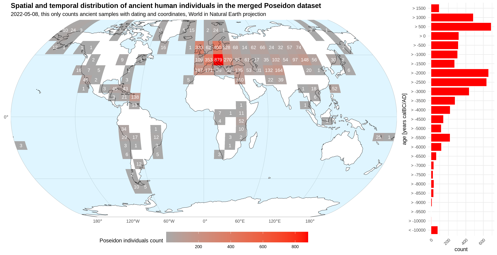

| # Inds | Package | # ancient | # modern | Github | Download | View |
|---|---|---|---|---|---|---|
| 1 | 2010_RasmussenNature | 1 | 0 | Github | Download | View |
| 1 | 2012_KellerNatureCommunications | 1 | 0 | Github | Download | View |
| 6 | 2012_MeyerScience | 0 | 6 | Github | Download | View |
| 1036 | 2012_PattersonGenetics | 0 | 1036 | Github | Download | View |
| 9 | 2012_PickrellNatureCommunications | 0 | 9 | Github | Download | View |
| 1 | 2014_FuNature | 1 | 0 | Github | Download | View |
| 13 | 2014_GambaNatureCommunications | 13 | 0 | Github | Download | View |
| 1222 | 2014_LazaridisNature | 3 | 1219 | Github | Download | View |
| 2 | 2014_MalaspinasCurrentBiology | 2 | 0 | Github | Download | View |
| 1 | 2014_OlaldeNature | 1 | 0 | Github | Download | View |
| 6 | 2014_RaghavanNature | 2 | 4 | Github | Download | View |
| 4 | 2014_RaghavanScience | 4 | 0 | Github | Download | View |
| 3 | 2014_RasmussenNature | 1 | 2 | Github | Download | View |
| 1 | 2014_SeguinOrlandoScience | 1 | 0 | Github | Download | View |
| 11 | 2014_SkoglundScience | 11 | 0 | Github | Download | View |
| 2535 | 2015_1000Genomes_1240K_haploid_pulldown | 0 | 2535 | Github | Download | View |
| 98 | 2015_AllentoftNature | 98 | 0 | Github | Download | View |
| 4 | 2015_CassidyPNAS | 4 | 0 | Github | Download | View |
| 1 | 2015_FuNature | 1 | 0 | Github | Download | View |
| 5 | 2015_GuntherPNAS | 5 | 0 | Github | Download | View |
| 3 | 2015_JonesNatureCommunications | 3 | 0 | Github | Download | View |
| 1 | 2015_LlorenteScience | 1 | 0 | Github | Download | View |
| 142 | 2015_MathiesonNature | 142 | 0 | Github | Download | View |
| 1 | 2015_OlaldeMBE | 1 | 0 | Github | Download | View |
| 23 | 2015_RaghavanScience | 23 | 0 | Github | Download | View |
| 1 | 2015_RasmussenNature | 1 | 0 | Github | Download | View |
| 5 | 2016_BroushakiScience | 5 | 0 | Github | Download | View |
| 40 | 2016_FuNature | 40 | 0 | Github | Download | View |
| 5 | 2016_HofmanovaPNAS | 5 | 0 | Github | Download | View |
| 8 | 2016_JeongPNAS | 8 | 0 | Github | Download | View |
| 5 | 2016_KanzawaJHG | 5 | 0 | Github | Download | View |
| 9 | 2016_KilincCurrentBiology | 9 | 0 | Github | Download | View |
| 169 | 2016_LazaridisNature | 41 | 128 | Github | Download | View |
| 280 | 2016_Mallick_SGDP1240K_diploid_pulldown | 0 | 280 | Github | Download | View |
| 9 | 2016_MartinianoNatureCommunications | 9 | 0 | Github | Download | View |
| 70 | 2016_MondalNatureGenetics | 0 | 70 | Github | Download | View |
| 2 | 2016_OmrakCurrentBiology | 2 | 0 | Github | Download | View |
| 10 | 2016_SchiffelsNatureCommunications | 10 | 0 | Github | Download | View |
| 74 | 2016_SkoglundNature | 4 | 70 | Github | Download | View |
| 6 | 2017_GonzalesFortesCurrentBiology | 6 | 0 | Github | Download | View |
| 5 | 2017_HaberAJHG | 5 | 0 | Github | Download | View |
| 8 | 2017_JonesCurrentBiology | 8 | 0 | Github | Download | View |
| 5 | 2017_KennettNatureCommunications | 5 | 0 | Github | Download | View |
| 20 | 2017_LazaridisNature | 20 | 0 | Github | Download | View |
| 1 | 2017_LindoPNAS | 1 | 0 | Github | Download | View |
| 138 | 2017_LipsonNature | 138 | 0 | Github | Download | View |
| 14 | 2017_MartinianoPLoSGenetics | 14 | 0 | Github | Download | View |
| 2 | 2017_PrueferScience | 2 | 0 | Github | Download | View |
| 5 | 2017_RodriguezVarelaCurrentBiology | 5 | 0 | Github | Download | View |
| 7 | 2017_SaagCurrentBiology | 7 | 0 | Github | Download | View |
| 7 | 2017_SchlebuschScience | 7 | 0 | Github | Download | View |
| 3 | 2017_Schuenemann_EgyptianMummies | 3 | 0 | Github | Download | View |
| 7 | 2017_SikoraScience | 7 | 0 | Github | Download | View |
| 59 | 2017_SkoglundCell | 25 | 34 | Github | Download | View |
| 8 | 2017_UnterlanderNatureCommunications | 8 | 0 | Github | Download | View |
| 2 | 2017_VanDenBrink | 2 | 0 | Github | Download | View |
| 93 | 2017_VyasAJPA | 0 | 93 | Github | Download | View |
| 1 | 2017_YangCurrentBiology | 1 | 0 | Github | Download | View |
| 63 | 2018_AmorimNatureCommunications | 63 | 0 | Github | Download | View |
| 137 | 2018_DamgaardNature | 137 | 0 | Github | Download | View |
| 111 | 2018_DamgaardScience | 70 | 41 | Github | Download | View |
| 4 | 2018_delaFuentePNAS | 4 | 0 | Github | Download | View |
| 27 | 2018_Ebenesersdottir_Iceland | 27 | 0 | Github | Download | View |
| 17 | 2018_FernandesScientificReports | 17 | 0 | Github | Download | View |
| 12 | 2018_FregelPNAS | 12 | 0 | Github | Download | View |
| 7 | 2018_GuntherPLoSBiology | 7 | 0 | Github | Download | View |
| 22 | 2018_HarneyMayNatureCommunications | 22 | 0 | Github | Download | View |
| 20 | 2018_Jeong_EurasianSteppe | 20 | 0 | Github | Download | View |
| 23 | 2018_KrzewinskaCurrentBiology | 23 | 0 | Github | Download | View |
| 35 | 2018_KrzewinskaScienceAdvances | 35 | 0 | Github | Download | View |
| 16 | 2018_Lamnidis_Fennoscandia | 15 | 1 | Github | Download | View |
| 7 | 2018_LindoScienceAdvances | 7 | 0 | Github | Download | View |
| 22 | 2018_LipsonCurrentBiology | 22 | 0 | Github | Download | View |
| 25 | 2018_LipsonScience | 25 | 0 | Github | Download | View |
| 226 | 2018_MathiesonNature | 226 | 0 | Github | Download | View |
| 28 | 2018_McCollScience | 26 | 2 | Github | Download | View |
| 39 | 2018_Mittnik_Baltic | 39 | 0 | Github | Download | View |
| 2 | 2018_MorenoMayarNature | 2 | 0 | Github | Download | View |
| 17 | 2018_MorenoMayarScience | 17 | 0 | Github | Download | View |
| 398 | 2018_OlaldeNature | 398 | 0 | Github | Download | View |
| 50 | 2018_Posth_SouthAmerica | 50 | 0 | Github | Download | View |
| 19 | 2018_PosthNatureEcologyEvolution | 19 | 0 | Github | Download | View |
| 75 | 2018_ScheibScience | 75 | 0 | Github | Download | View |
| 1 | 2018_SchroederPNAS | 1 | 0 | Github | Download | View |
| 11 | 2018_ValdioseraPNAS | 11 | 0 | Github | Download | View |
| 7 | 2018_VanDeLoosdrecht_Morrocco | 7 | 0 | Github | Download | View |
| 41 | 2018_VeeramahPNAS | 41 | 0 | Github | Download | View |
| 1 | 2018_Zalloua_Phoenician | 1 | 0 | Github | Download | View |
| 134 | 2019_Antonio_AncientRome | 134 | 0 | Github | Download | View |
| 120 | 2019_Biagini_Spain | 0 | 120 | Github | Download | View |
| 56 | 2019_Brace_Britain | 56 | 0 | Github | Download | View |
| 14 | 2019_BraceNatureEcologyEvolution | 14 | 0 | Github | Download | View |
| 8 | 2019_Feldman_Anatolia | 8 | 0 | Github | Download | View |
| 10 | 2019_Feldman_Philistines | 10 | 0 | Github | Download | View |
| 107 | 2019_Flegontov_PalaeoEskimo | 49 | 58 | Github | Download | View |
| 4 | 2019_GonzalesFortes_Iberia | 4 | 0 | Github | Download | View |
| 13 | 2019_Haber_Crusaders | 13 | 0 | Github | Download | View |
| 38 | 2019_Harney_LakeRoopkund | 38 | 0 | Github | Download | View |
| 31 | 2019_Jarve_Scythian | 31 | 0 | Github | Download | View |
| 765 | 2019_Jeong_InnerEurasia | 2 | 763 | Github | Download | View |
| 11 | 2019_Malmstrom_Scandinavia | 11 | 0 | Github | Download | View |
| 118 | 2019_Mittnik_BAEurope | 118 | 0 | Github | Download | View |
| 542 | 2019_Narasimhan_centralSouthAsia | 542 | 0 | Github | Download | View |
| 2 | 2019_Nikitin_LBK | 2 | 0 | Github | Download | View |
| 11 | 2019_Ning_Tianshan | 11 | 0 | Github | Download | View |
| 277 | 2019_Olalde_Iberia | 277 | 0 | Github | Download | View |
| 43 | 2019_Prendergast_EastAfrica | 43 | 0 | Github | Download | View |
| 56 | 2019_Saag_EasternBaltic | 56 | 0 | Github | Download | View |
| 26 | 2019_SanchezQuinto_Megalithic | 26 | 0 | Github | Download | View |
| 24 | 2019_Schroeder_Poland | 24 | 0 | Github | Download | View |
| 1 | 2019_Shinde_Harappan | 1 | 0 | Github | Download | View |
| 31 | 2019_Sikora_NorthEastSiberia | 31 | 0 | Github | Download | View |
| 11 | 2019_Villalba_Iberia | 11 | 0 | Github | Download | View |
| 49 | 2019_Wang_Caucasus | 49 | 0 | Github | Download | View |
| 73 | 2020_AgranatTamir_LevantBA | 73 | 0 | Github | Download | View |
| 3 | 2020_BarqueraCurrentBiology | 3 | 0 | Github | Download | View |
| 929 | 2020_Bergstrom_HGDP | 0 | 929 | Github | Download | View |
| 6 | 2020_Bongers_SouthPeru | 6 | 0 | Github | Download | View |
| 58 | 2020_Brunel_France | 53 | 0 | Github | Download | View |
| 42 | 2020_Cassidy_IrishDynastic | 41 | 0 | Github | Download | View |
| 174 | 2020_Fernandes_Caribbean | 174 | 0 | Github | Download | View |
| 62 | 2020_Fernandes_westernMediterranean | 62 | 0 | Github | Download | View |
| 96 | 2020_Furtwaengler_Switzerland | 84 | 0 | Github | Download | View |
| 19 | 2020_Haber_NearEast | 19 | 0 | Github | Download | View |
| 3 | 2020_Immel_Moldova | 3 | 0 | Github | Download | View |
| 194 | 2020_Jeong_EurasiaEasternSteppe | 194 | 0 | Github | Download | View |
| 19 | 2020_Linderholm_Poland | 19 | 0 | Github | Download | View |
| 7 | 2020_Lipson_WestAfrica | 7 | 0 | Github | Download | View |
| 70 | 2020_Marcus_Sardinia | 70 | 0 | Github | Download | View |
| 442 | 2020_Margaryan_Viking | 442 | 0 | Github | Download | View |
| 93 | 2020_Nagele_Caribbean | 93 | 0 | Github | Download | View |
| 61 | 2020_Nakatsuka_Andes | 61 | 0 | Github | Download | View |
| 20 | 2020_Nakatsuka_SouthPatagonia | 0 | 0 | Github | Download | View |
| 2 | 2020_NievesColon_PuertoRico | 2 | 0 | Github | Download | View |
| 55 | 2020_Ning_China | 25 | 0 | Github | Download | View |
| 101 | 2020_Rivollat_FranceGermany | 101 | 0 | Github | Download | View |
| 110 | 2020_Skourtanioti_NearEast | 110 | 0 | Github | Download | View |
| 3 | 2020_TeschlerNicola_UpperPaleoTwin | 3 | 0 | Github | Download | View |
| 20 | 2020_Wang_subSaharanAfrica | 19 | 0 | Github | Download | View |
| 24 | 2020_Yang_China | 0 | 0 | Github | Download | View |
| 19 | 2020_Yu_NorthRussia | 19 | 0 | Github | Download | View |
| 1 | 2021_CarlhoffNature | 1 | 0 | Github | Download | View |
| 28 | 2021_Freilich_Croatia | 28 | 0 | Github | Download | View |
| 117 | 2021_GnecchiRuscone_KazakhSteppe | 117 | 0 | Github | Download | View |
| 40 | 2021_Kilinc_northeastAsia | 0 | 0 | Github | Download | View |
| 283 | 2021_Papac_CentralEurope | 283 | 0 | Github | Download | View |
| 47 | 2021_Saag_EastEuropean | 29 | 0 | Github | Download | View |
| 574 | 2021_Wang_EastAsia | 191 | 0 | Github | Download | View |
| 24 | 2021_Zegarac_SoutheasternEurope | 24 | 0 | Github | Download | View |
| 12 | Archaic_Humans | 12 | 0 | Github | Download | View |
| 4 | Reference_Genomes | 0 | 4 | Github | Download | View |